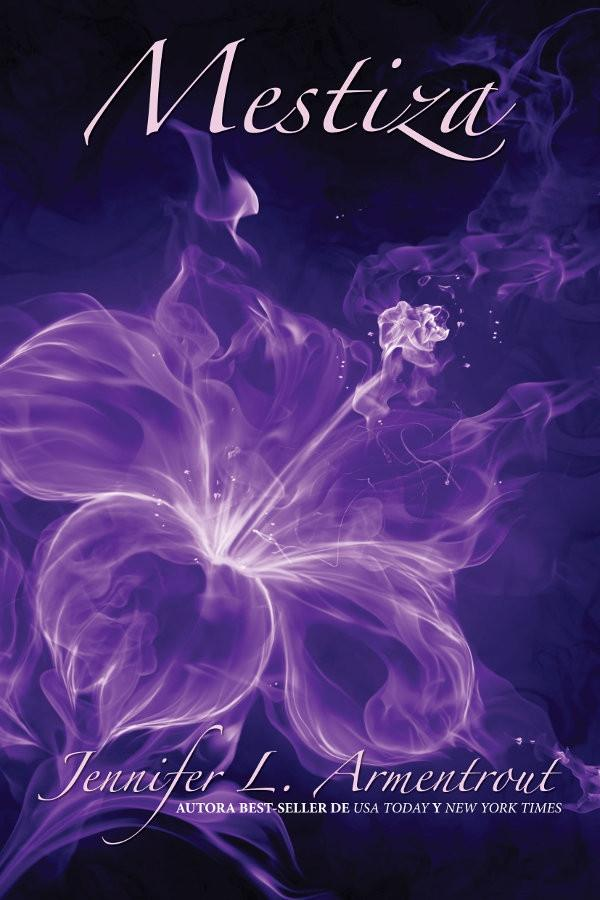

Saga Covenant

Mestiza
¿Serías capaz de matar a quien amas? Los Hematoi provienen de la unión entre dioses y mortales;
y los hijos de dos Hematois de sangre pura tienen poderes divinos. En cambio, los hijos de Hematois
y mortales, no. Los mestizos solo tienen dos opciones: entrenar para ser centinelas, cazando y matando
Daimons, o convertirse en sirvientes en las casas de los puros. Alexandria prefiere arriesgar su vida
luchando antes que limpiar retretes, aunque de todas formas, puede que termine en los barrios bajos.
Hay reglas muy estrictas que los estudiantes del Covenant deben seguir. Álex tiene problemas con todas,
pero especialmente con la regla número 1: «Las relaciones entre pura sangre y mestizos están prohibidas».
Por desgracia, Álex se siente atraída por Aiden, un pura sangre irresistible. Aunque enamorarse de Aiden
no es su mayor problema; mantenerse viva hasta su graduación en el Covenant y llegar a ser centinela sí lo es.
Si no cumple con su deber, se enfrentará a un futuro peor que la muerte o la esclavitud: se convertirá en un
Daimon y Aiden será su cazador. Y eso, no es nada bueno. «Sexy, chispeante, conmovedora y divertida».